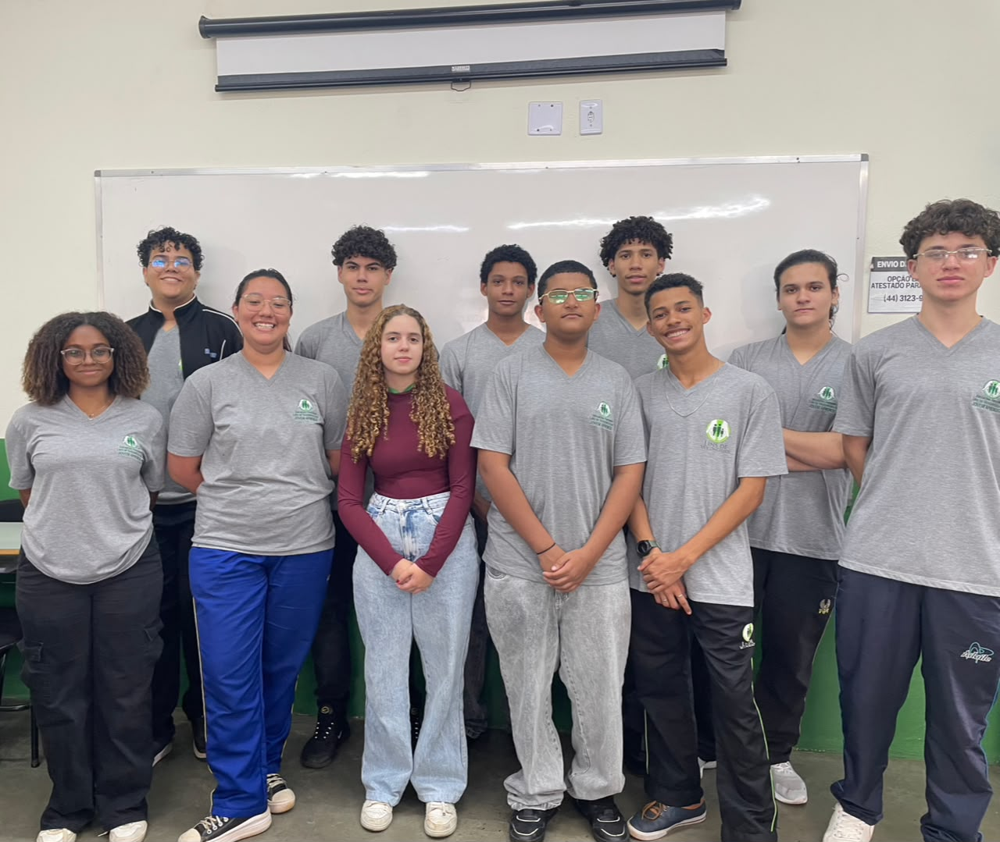

Bem-vindo à FOXYCOMPANY MKT 🚀
Marketing digital estratégico, autêntico e focado em gerar resultados reais para o seu negócio.
Conhecer Nossas FunçõesMarketing digital estratégico, autêntico e focado em gerar resultados reais para o seu negócio.
Conhecer Nossas FunçõesNós da FOXYCOMPANY MKT, somos uma agência de marketing orientada a transformar a presença de empresas no ambiente digital. Nosso propósito é conectar marcas e pessoas por meio de estratégias inovadoras, autênticas e focadas em resultados reais, impulsionando o crescimento sustentável dos nossos clientes no mercado.
Buscamos ser referência no setor como uma agência transformadora, reconhecida pela união entre inteligência de dados, alta criatividade e capacidade de adaptar negócios ao futuro da comunicação.
Aqui ao lado está uma foto dos nossos colaboraores, sendo eles (Luiz Eduardo, Luis Fernando, Emanuel, Pedro, Fernanda, Aleksandra, Luiz Miguel, kauan, Nycolas, Ihorrana.)


Oferecemos um ecossistema de soluções estratégicas para conectar sua marca ao futuro da comunicação e acelerar suas vendas no ambiente digital. Combinamos inteligência de dados e abordagens criativas para cobrir toda a jornada do cliente, atraindo, convertendo e fidelizando com agilidade e eficiência.
Uma estratégia de marketing eficiente só gera valor real quando aliada a uma execução técnica rigorosa. Por isso, estruturamos processos analíticos que acompanham o ciclo de vida do cliente, integrando dados, criatividade e testes constantes para garantir autenticidade e conversões de alto impacto.
Nossa metodologia de marketing e vendas já ajudou marcas de diferentes setores a escalarem seus resultados no ambiente digital. Combinando análise profunda de dados, criação de conteúdo estratégico e gestão de mídia focada em performance, estruturamos processos previsíveis de atração e conversão que transformam a presença digital dos nossos clientes em uma máquina contínua de novos negócios. Abaixo, apresentamos como aplicamos essa abordagem na prática para resolver desafios reais de mercado e gerar crescimento mensurável.